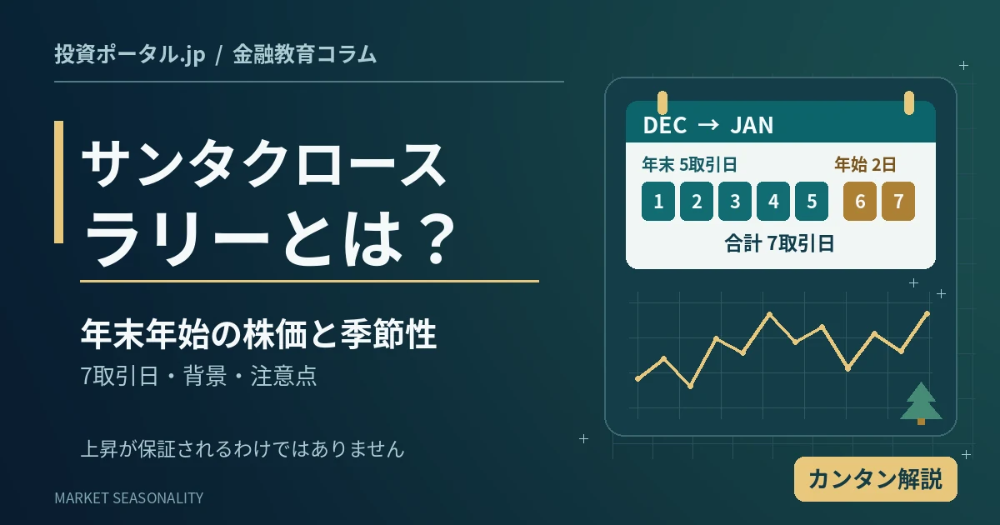

サンタクロースラリーとは？年末年始に株価が上昇しやすいと言われる理由と注意点を初心者向けに解説
年末になると「サンタクロースラリー」という言葉を耳にすることがあります。クリスマスから新年にかけて株価が上がるという話は、本当に毎年当てはまるのでしょうか。対象となる7取引日、考えられる背景、過去の上昇・下落事例と注意点を整理します。

目次
サンタクロースラリーとは？
サンタクロースラリー（Santa Claus Rally） とは、年末から年始の特定の取引日に株価が上昇しやすいとされる季節的な傾向です。米国株式市場、とりわけS&P500で知られています。
株式市場で繰り返し観察されるものの、理論だけでは十分に説明できない傾向を アノマリー と呼びます。季節性はその一種です。 Stock Trader’s Almanacの解説 によれば、創刊者のYale Hirschが1972年に考案し、1973年版に掲載しました。クリスマスから新年にかけての時期にちなむ名称です。
経済理論や取引制度によって上昇が保証されるわけではありません。実際の株価は企業業績、金利、需給などにも左右されます。
サンタクロースラリーはいつからいつまで？
報道では12月後半の株高全般を指すこともありますが、提唱元の定義は 12月の最後の5取引日と1月の最初の2取引日、合計7取引日 です。
→
土日・クリスマス・元日などの休場日は数えません。正式な短縮取引日は1取引日として含めます。開始日と終了日は毎年変わるため、取引所の営業日を確認しましょう。
なぜサンタクロースラリーが起こると言われるのか？
年末年始の需給変化を説明する仮説には、次のようなものがあります。単一の原因が確立されているわけではありません。
年末年始の投資家心理
休暇や新年への楽観、翌年の景気・業績への期待からリスクを取りやすくなる可能性があります。反対に不確実性を警戒して現金を増やす投資家もいます。
機関投資家の年末調整
リバランス（資産配分の調整）、ウィンドウドレッシング（報告時点の保有銘柄の見栄えを整える行動）、利益確定や持ち高の圧縮などが需給に影響する可能性があります。いずれも買いと売りの両方につながり得ます。
税金対策による売却と買い戻し
含み損のある銘柄を売却し、税務上の損失を確定させるタックスロス・セリングが年末に集中する場合があります。売りが一巡した後、年明けに資金が再配分されるという仮説です。
米国では実質的に同一の証券を損失売却の前後30日以内に取得すると、ウォッシュセール規則により損失控除が制限される場合があります（ IRS Publication 550 ）。日本では課税口座の上場株式等の譲渡損失について一定の損益通算・繰越控除が認められます（ 国税庁 No.1474 ）。NISAの損失は損益通算できません。制度は同じではなく、税務上の条件は個別に確認が必要です。
市場参加者と取引量の変化
クリスマス休暇などで機関投資家を含む参加者が減り、注文の厚みが薄くなると、少ない売買でも価格が動く可能性があります。 市場の流動性 が低下しても上昇するとは限らず、売りが偏れば急落やスプレッド拡大も起こり得ます。
新年への期待と資金の流入
新年度の運用計画、新たな資金配分、翌年の金融政策や業績への期待が株式需要を変える場合があります。ただし資金流入の時期や規模は一様ではありません。
過去のサンタクロースラリーは本当に上昇しているのか？
提唱元の 2026年2月号の解説 では、1950年以降のS&P500の対象期間の平均騰落率は 約＋1.3％ と報告されています。ただし、平均がプラスでもすべての年で上昇したわけではありません。
| 対象期間 | 公表騰落率 | 結果・出典 |
|---|---|---|
| 2021年末～2022年始 | ＋1.4％ | 上昇／ 2022年1月4日の公表資料 |
| 2025年末～2026年始 | −0.11％ | 下落／ 2026年2月号 |
上表は提唱元の公表騰落率を紹介したもので、全期間の独自集計ではありません。事例は2期間のみであり、この2件から上昇割合を計算することは適切ではありません。確認日：2026年11月25日。開始・終了指数値は転載せず、原資料をご参照ください。
騰落率を計算する方法
対象の最初の取引日の前取引日終値を開始基準値とし、1月の第2取引日終値を終了値とします。
騰落率（％）＝（終了時の指数値 ÷ 開始基準の指数値 − 1）×100
上昇割合（％）＝ 上昇した対象期間数 ÷ 有効な全対象期間数 ×100
架空の例：開始基準値が1,000、終了値が1,010なら＋1％、990なら−1％です。期間中の上昇・下落の回数ではなく、7取引日全体の騰落率で判定します。
データの条件と掲載範囲
| 項目 | 内容 |
|---|---|
| 対象指数 | 米ドルベースのS&P500価格指数（配当なし・円換算なし） |
| 日次データの仕様 | FREDのSP500は取引日終値。提供元はS&P Dow Jones Indices LLC |
| 履歴と利用条件 | FREDの公開日次履歴は約10年。指数データの再掲載には権利者の事前許可が必要 |
| 紹介した外部統計 | 1950年以降の平均（Almanac 2026年2月号）。正確なサンプル数・中央値・上昇／下落／横ばい回数は同箇所で未確認 |
| 独自集計 | 未実施。欠損処理・通常7取引日との比較も未実施 |
| 将来の集計ルール | 休場を欠損と扱わず、必要終値が欠ける期間は補完せず除外し、除外件数を明記する |
| 資料確認日 | 2026年11月25日。2026年末～2027年始は実績に含めない |
出典： FRED：S&P500（系列説明・著作権情報） 。FREDの指数値そのものは転載していません。提唱元の全統計の欠損処理・配当や費用等の詳細条件は公表箇所で確認できないため、上記データ仕様と同一であるとは断定しません。
上昇傾向と統計的な有意性は別の話
株式市場には長期的に上昇する期間もあるため、対象期間の平均が正であるだけでは、その時期特有の効果とはいえません。通常の7取引日間と条件をそろえて比較し、ばらつきや標本数、統計的な有意性を検討する必要があります。
2023年のJournal of Accounting and Finance掲載研究 では、2000年1月～2021年12月の米国株リターンを検証し、対象日の優位性を確認できなかったと報告しています。期間を2000～2009年と2010～2021年に分けた検証でも同様でした。長期の記述統計と特定期間の検定は異なるため、どちらも将来の利益を保証するものではありません。
サンタクロースラリーが起こらない年もある
季節的な需給より大きな材料があれば、株価が下落することもあります。
- 金融引き締め ・利上げ観測・ 長期金利 上昇：将来利益の現在価値や資金調達費用に影響。
- インフレ再加速・ 景気後退懸念 ・業績悪化：利益予想の下方修正につながる可能性。
- 地政学リスク・金融危機： リスクオフ によって売りが増える可能性。
- 利益確定売り・株価の割高感：好材料が織り込まれていると上値が重くなることもある。
市場構造や参加者の変化でアノマリーが弱まる可能性もあります。年末年始に下落したからといって翌年も下落するとは断定できません。2023年末～2024年始にラリーが不発だったにもかかわらず、2024年通年のS&P500は上昇した例も提唱元が紹介しています。
日本株にもサンタクロースラリーはあるのか？
日本株でも年末年始に需給が変わることはありますが、米国の季節性がそのまま当てはまるとは限りません。
| 比較項目 | 米国株 | 日本株 |
|---|---|---|
| 主な指数 | S&P500・NYダウ | 日経平均株価・TOPIX |
| クリスマス | 原則休場（振替休場の場合あり） | 平日なら原則取引日 |
| 年末年始 | 各取引所の営業日による | 大納会・大発会、12月31日～1月3日は原則休場 |
| 金融政策 | FRB | 日本銀行 |
| 変動要因 | 米国経済・企業業績・金利 | 国内経済・為替・海外市場 |
営業日： NYSE ・ JPX公式カレンダー （2026年11月25日確認）。日本株の年末年始7取引日を米国株と比較するなら、それぞれの市場の営業日で数え、同じ計算方法で検証します。本記事では日本株の上昇割合を独自に算出していません。米国株の基礎は 米国株とは？ も参照してください。
ブラックフライデーやクリスマス商戦との関係
ブラックフライデーは米国の感謝祭翌日を中心とする小売商戦、クリスマス商戦は年末の消費活動です。一方、サンタクロースラリーは株式市場の値動きの季節性を指します。
- 年末商戦・個人消費 消費者の購買動向が変化
- 企業の売上・利益率・業績見通し 販売数量だけでなく値引きや在庫、費用も関係
- 投資家の業績予想 実績と市場予想との差を評価
- 株価への影響 好感・失望の両方があり得る
売上が伸びても割引で利益率が低下したり、予想を下回ったりすれば株価が下落することがあります。金融政策や金利も影響します。年末商戦とサンタクロースラリーに直接的な因果関係があるとは限りません。
年末ラリー・1月効果との違い
- 11月下旬 ブラックフライデー：年末商戦
- 12月 クリスマス商戦：消費活動
- 12月末～1月初め サンタクロースラリー：7取引日の季節性
- 1月 1月効果：主に小型株などの季節性
| 用語 | 主な対象期間 | 内容 |
|---|---|---|
| ブラックフライデー | 11月下旬 | 米国を中心とした大規模な商戦 |
| 年末ラリー | 主に年末 | 年末に向けた株高を広く指す |
| クリスマスラリー | クリスマス前後 | 文脈によって使い方が異なる株高の表現 |
| サンタクロースラリー | 年末5取引日＋年始2取引日 | 米国株で知られる季節性 |
| 1月効果 | 主に1月 | 年始の株高、とりわけ小型株などに見られるとされる季節性 |
クリスマスラリーはサンタクロースラリーと同義で使われることもあります。1月効果は7取引日に限定されず、注目する銘柄群も異なります。季節性という共通点はありますが、別の観察対象です。
注目すべき経済指標や市場環境
| 指標・材料 | 何を確認する？ |
|---|---|
| 米国小売売上高 | 個人消費の強弱。売上増が利益増と同じとは限らない |
| CPI ・ PCEデフレーター | 物価上昇と利下げ・利上げ期待への影響 |
| 米国雇用統計 | 雇用の強さと景気・金利見通し |
| FOMC ・ 政策金利 | 中央銀行の方針と市場予想の差 |
| 米国長期金利 | 株式評価・資金調達への影響 |
| 企業の決算 ・業績見通し | 売上・利益・翌期予想と事前期待の差 |
| 取引量・流動性 | 注文の薄さ、価格変動、スプレッド |
| リスク選好 | 株式などリスク資産への需要、リスクオフの有無 |
指標同士の関係は 金利の種類と関係 、 物価指標の違いと関係 で整理できます。年末だからという理由だけで、指標発表時の値動きを予測しないことが大切です。
初心者が誤解しやすいポイント
| 誤解 | 正しい理解 |
|---|---|
| 12月は必ず株価が上がる | 上昇は保証されない |
| クリスマス当日から始まる | 暦日ではなく取引日を基準とする |
| 12月全体が対象 | 本来の定義は年末年始の7取引日 |
| 米国株も日本株も同じ | 営業日・制度・市場環境が異なる |
| 上昇割合が高ければ利益が出る | 下落幅、為替、費用も重要 |
| 年末商戦が好調なら必ず上昇 | 市場予想や利益率、他の材料にも左右される |
| ラリーがなければ翌年は下落 | 翌年の相場を確実に予測できない |
投資における注意点
過去の実績は将来の結果を保証しません。季節性だけで短期的な価格変動を予測することは困難です。
- 流動性： 参加者が減ると売買価格の差（スプレッド）が広がり、想定価格で取引できない可能性があります。
- 取引費用： 手数料・スプレッド・税金などを差し引くと、指数の上昇率と実際の収益は異なります。
- 為替： 米ドル建てで株価が上がっても、円高が進めば円換算では損失となることがあります。
- 選択バイアス： 都合のよい年や期間だけを選ぶと、傾向を過大評価するおそれがあります。
- 平均と損失： 平均がプラスでも大きな下落はあり得ます。例えば架空の10回中8回が＋1％、2回が−6％なら、単純平均は−0.4％です。上昇割合80％でも平均はマイナスになります。
短期投資と長期投資 では目的や評価期間が異なります。長期の資産形成と短期の季節性を混同せず、 リスクとリターン や 資金管理 を理解するための参考情報として扱いましょう。
初心者向けチェックリスト
売買の判断を促すものではなく、年末年始の市場ニュースを理解するための確認項目です。
- 本来の対象期間を理解しているか
- 取引所の営業日を確認したか
- 過去の統計の対象期間・出典を確認したか
- 上昇事例だけでなく下落事例も確認したか
- 金利・経済指標・業績の状況を確認したか
- 市場の流動性や取引量に注意しているか
- 為替変動や取引費用を考慮しているか
- 季節性だけで投資判断を行っていないか
FAQ｜よくある質問
サンタクロースラリーとは何ですか？
年末年始の特定の取引日に米国株などが上昇しやすいとされる季節的な傾向です。
サンタクロースラリーはいつからいつまでですか？
本来は12月の最後の5取引日と1月の最初の2取引日です。具体的な日付は年によって変わります。
なぜサンタクロースラリーと呼ばれるのですか？
クリスマスから新年にかけての時期にちなんだ名称です。Yale Hirschが1972年に考案し、1973年版のAlmanacに掲載したとされています。
サンタクロースラリーは毎年起こりますか？
いいえ。対象期間に下落する年もあります。
日本株にもサンタクロースラリーはありますか？
季節的な需給変化は考えられますが、米国株と同じ傾向があるとは断定できません。
サンタクロースラリーと1月効果の違いは何ですか？
前者は年末年始の7取引日、後者は主に1月の株式市場、とりわけ小型株などに見られるとされる傾向です。
ブラックフライデーと関係がありますか？
消費や業績予想を通じた間接的な影響は考えられますが、商戦と株価の季節性は別の現象です。
ラリーが起こらないと翌年の株価は下落しますか？
いいえ。翌年の相場には金融政策や企業業績など多くの要因が影響します。
サンタクロースラリーだけで投資判断をしてもよいですか？
季節性だけでは判断できません。損失や費用、為替変動、市場環境なども考慮する必要があります。
まとめ
- サンタクロースラリーは株式市場の季節的な傾向（アノマリー）の一種。
- 本来の対象期間は年末5取引日と年始2取引日の合計7取引日。
- 心理・機関投資家の調整・税金対策・流動性など複数の要因が関係すると考えられる。
- 毎年発生するわけではなく、米国株と日本株の市場環境も異なる。
- 季節性だけでなく、経済指標・金利・業績・リスクを総合的に理解することが重要。
参考資料・出典
- Stock Trader’s Almanac：2023年1月26日 ：提唱者・初掲載年
- Stock Trader’s Almanac：2026年2月号 ：定義・長期平均・下落事例
- Stock Trader’s Almanac：2022年1月4日 ：上昇事例
- The Santa Claus Rally in U.S. Stock Market Returns（2023） ：季節性の統計的検証
- FRED：S&P500（SP500） ：価格指数・日次終値・利用条件
- NYSE：Holidays & Trading Hours ：米国市場の休場・短縮取引
- JPX：営業時間・休業日一覧 ：日本市場の休業日
- IRS：Publication 550 ：米国のウォッシュセール規則
- 国税庁：No.1474 ：上場株式等の譲渡損失の損益通算・繰越控除
資料確認日：2026年11月25日。外部統計と架空の計算例は区別しています。制度や営業日は最新の公式資料をご確認ください。
一般ユーザー目線の体験でおすすめの会社をご紹介
ご利用にあたっての注意事項
本記事は金融教育・情報提供を目的とし、特定の有価証券の購入や投資を勧誘するものではありません。株式投資には価格変動等による損失の可能性があります。制度・税務上の取扱いは状況によって異なります。最新の開示資料等を確認し、ご自身の判断と責任でお取引ください。